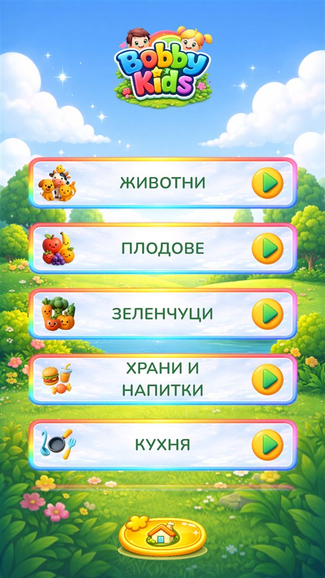
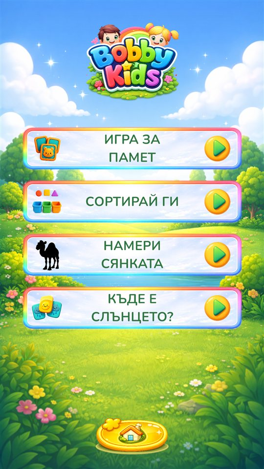
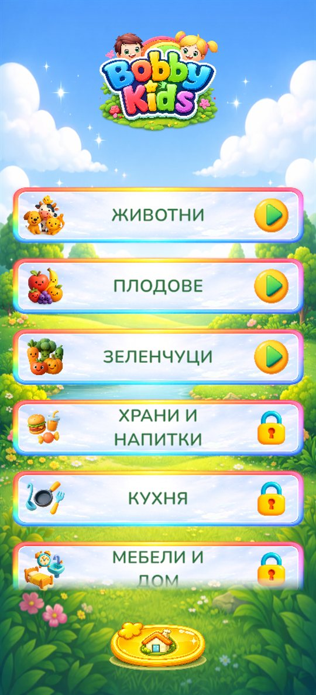
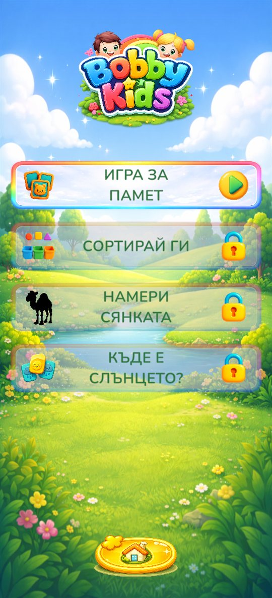

Три начина да учиш
Всичко е изградено около теми, които децата обичат: животни, плодове, зеленчуци, храни и напитки, превозни средства, дрехи и аксесоари, кухня, мебели и дом, техника, професии, музикални инструменти, числа, цветове и фигурки.
Учи
Докосни картинка и чуй името ѝ. Големите весели карти правят първите думи лесни за откриване със собствено темпо.
Провери се
„Намери го“, „Колко са?“ и „Преброй и събери“ превръщат новите думи и числа в кратки насърчаващи предизвикателства.
Играй
„Игра за памет“, „Сортирай ги“, „Намери сянката“ и „Къде е слънцето?“ развиват вниманието, логиката и зрителното възприятие.
Надникни вътре
Плъзни, за да видиш още.




Безплатна и пълна версия
Bobby Kids може да се изтегли и опита безплатно. Ето точно какво включва всяка версия, за да знаете какво получавате, преди да купите.
| Раздел | Безплатно | Пълна версия |
|---|---|---|
| 📖 Учи | Животни (ферма и гора), плодове и зеленчуци | Всички 15 теми, включително всички 10 групи животни: ферма, гора, джунгла, савана, пустиня, полярни, водни и екзотични животни, птици и насекоми |
| ❓ Провери се | „Намери го“ с животни от фермата и гората, плодове и зеленчуци | „Намери го“ с всичките си теми, както и „Колко са?“ и „Преброй и събери“ |
| 🧩 Играй | „Игра за памет“ с животни от фермата и гората, плодове и зеленчуци | „Игра за памет“ с всичките си теми, както и „Сортирай ги“, „Намери сянката“ и „Къде е слънцето?“ |
Как се отключва
- Еднократна покупка. Без абонамент и без реклами.
- Магазинът показва цената за вашата държава, преди да купите.
- Отключването е възможно само от Настройки, след родителска проверка.
- Ако дете докосне заключен елемент, вижда само „Помоли възрастен да го отключи от Настройки“. Не се отваря екран за покупка.
- Вече сте купили? Натиснете „Възстанови покупката“ в Настройки, например на ново устройство.




За родителите
Създадена като спокойно и безопасно място за малките деца.
- Без реклами и без проследяване.
- Без профили, без чат и без връзки извън приложението.
- Напредъкът се пази само на вашето устройство.
- Нивата стават по-трудни постепенно, докато детето играе.
- Безплатно за опитване. Еднократна покупка отключва цялото съдържание, без абонаменти. Вижте какво е безплатно.
- Покупките и настройките са защитени с родителска проверка.
20% за болни деца
Дал съм си обещание: 20% от приходите от Bobby Kids ще отиват за благотворителност, в помощ на болни деца, чиито семейства не могат да си позволят лечението им.